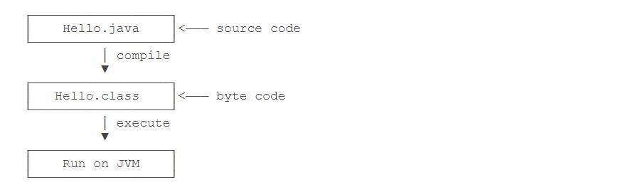
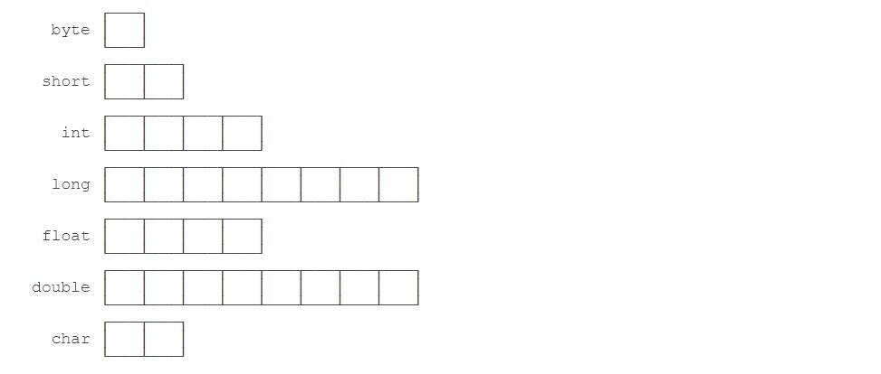
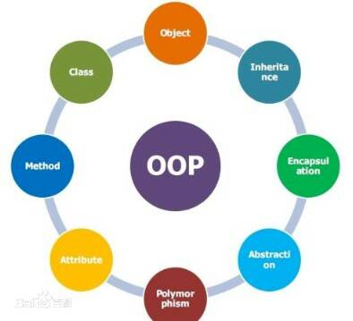
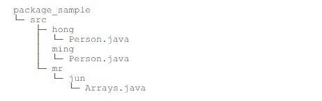

Java
Table of Contents
介绍
Java 学习路线如下：
- Java SE ，掌握 Java 语言核心、 Java 核心开发技术以及 Java 标准库的使用；
- Java EE ，需要学习 Spring 框架、数据库开发、分布式架构；
- 大数据开发，需要学习 Hadoop、Spark、Flink 等大数据平台；
- 移动开发，需要学习 Android 平台开发。
例行，先输出 Hello World. ，看代码：
1: // Hello.java 2: public class Hello{ 3: public static void main(String[] args) { 4: System.out.println("Hello World."); 5: } 6: }
如何运行 Java 程序？

Java 基础知识
Java 是面向对象的语言，一个程序的 基本单位 就是 class ，可以这样理解，Java 的所有数据和逻辑都是 封装 在 class 中的。
数据类型
在 Java 中，变量分为两种：基本类型、引用类型，必须 先定义后使用 ，类型不能重复定义。
什么是基本数据类型呢？基本数据类型是 CPU 可以直接进行运算的类型，Java 定义了一下集中基本数据类型：
- 整数类型： byte、short、int、long ；
- 浮点类型： float、double ；
- 字符类型： char ；
- 布尔类型： boolean 。
Java 基本数据类型占用的字节数，如下：

byte 恰好就是一个字节，等于 8 个 bit 。
字符串数据类型 需要注意什么？
Java 的字符串除了是一个引用类型外，还有个重要特点，就是字符串不可变。对字符串变量重新赋值，其实是 JVM 另外开辟了一个空间，然后把变量指向它。
数组 有几个特点？如下：
- 数组所有元素初始化为默认值，整型都是
0，浮点型是0.0，布尔型是false； - 数组一旦创建后，大小就不可变。
如何初始化数组呢？通过 new 初始化或直接指定初始化的元素或字面量初始化，如下：
1: public class Main { 2: public static void main(String[] args) { 3: // new 初始化，后通过索引赋值 4: int[] arr = new int[5]; 5: arr[0] = 11; 6: arr[1] = 22; 7: // ... 8: arr[4] = 55; 9: // 索引超出范围，运行时将报错 10: arr[5] = ... 11: 12: // 直接指定初始化的元素 13: int[] _arr = new int[] { 1, 2, 3, 4, 5 }; 14: 15: // 字面量初始化 16: int[] __arr = { 1, 2, 3, 4, 5 }; 17: } 18: }
注意：后续代码片段如果没有写类名，默认都写在含有
main方法的类中。
关于 字符串数组 ，应该知道？
如果数组元素不是基本类型，而是一个引用类型，其实数组的元素实际上是引用类型的 引用地址 。
类型初始化
数组
1. 声明数组变量
dataType[] arrayRefVar; // 首选方法 // OR dataType arrayRefVar[]; // C/C++ 风格，效果相同（不推荐）
↓
1: double[] myList; // 首选方法 2: // OR 3: double myList[]; // 效果相同（不推荐）
2. 创建数组
dataType[] arrayRefVar; // 声明数组变量 arrayRefVar
arrayRefVar = new dataType[arraySize]; // 创建数组，然后赋值给声明的数组变量 arrayRefVar
// new 创建数组 → 声明变量 → 赋值数组给声明的变量
dataType[] arrayRefVar = new dataType[arraySize];
// OR
dataType[] arrayRefvar = new dataType[]{ value0, value1, ..., valuek };
// 字面量方式创建数组 → 声明数组变量 → 赋值数组给声明的变量
dataType[] arrayRefVar = { value0, value1, ..., valuek};
↓
1: double[] myList; // 声明数组变量 myList 2: myList = new dataType[9]; // 创建数组（长度为 9），并赋值给变量 myList 3: 4: // new 运算符 5: double[] myList = new double[9]; 6: // OR 7: double[] myList = new double[]{ 1, 2, 3, 4, 5, 6, 7, 8, 9}; 8: 9: // 字面量 10: double[] myList = { 1, 2, 3, 4, 5, 6, 7, 8, 9 };
3. 多维数组
type[][] typeName = new type[typeLength1][typeLength2];
↓
1: String str[][] = new String[3][4]; // 三行四列的数组
数组的操作
Java 中的数组的操作，包括：遍历、排序。
如何遍历一个数组呢？
- 通过
for循环可以； - 通过
for each循环，可以迭代数组的每个元素，但无法拿到数组的索引。
使用
Arrarys.toString()可以快速获取数组内容。
如何排序一个数组呢？常用的排序算法有：
- 冒泡排序；
- 插入排序；
- 快速排序。
Java 的标准库已经内置了排序功能，只需要调用 JDK 提供的
Arrays.sort()就可以排序。
命令行参数
Java 程序的入口是 main 方法，儿 main 方法可以接受一个命令行参数，它是一个 String[] 数组。这个命令行参数由 JVM 接收用户输入并传给 main 方法：
1: public class Main { 2: public static void main(String[] args) { 3: for(String arg: args) { 4: System.out.println(arg); 5: } 6: } 7: }
我们可以利用接收到的命令行参数，根据不同的参数执行不同的代码，如实现一个 -version 参数，打印程序版本号：
1: // ... 2: for(String arg: args) { 3: if("-version".equals(arg)) { 4: System.out.println("v 1.0"); 5: break; 6: } 7: } 8: // ...
Java 数据结构
Java 工具包提供了强大的数据结构，主要包括一下几种接口和类：枚举、位集合、向量、栈、字典、哈希表、属性、集合框架（Java2 引入）。
枚举
i.e.Enumberation
枚举接口 本身 不属于 数据结构，但它在其他数据结构的范畴里应用很广，它定义了一种从数据结构中 取回连续元素 的方式。
枚举接口定义了一些方法，通过这些方法可以枚举（一次获得一个）对象集合中的元素。这种传统接口已被 迭代器 取代，虽然枚举接口还未遗弃，但在现代代码中已经很少使用了。尽管如此，它还是在注入 Vector 和 Properties 这些传统类所定义的方法中，除此之外，还用在一些 API 类，并且在应用程序中也广泛被使用。
| 方法 | 描述 |
|---|---|
boolean hasMoreElements() |
测试此枚举是否包含更多的元素 |
Object nextElement() |
如果此枚举对象至少还有一个可提供的元素，则返回此枚举的下一个元素 |
1: import java.util.Vector; 2: import java.util.Enumberation; 3: 4: public class EnumberationTester { 5: public static void main(String[] args) { 6: Enumberation<String> days; 7: Vector<String> dayNames = new Vector<String>(); 8: 9: dayNames.add("Sunday"); 10: dayNames.add("Monday"); 11: dayNames.add("Tuesday"); 12: dayNames.add("Wednesday"); 13: dayNames.add("Thursday"); 14: dayNames.add("Friday"); 15: dayNames.add("Saturday"); 16: 17: days = dayNames.elements(); 18: 19: while(days.hasMoreElements()) { 20: System.out.println(days.nextElement()); 21: } 22: } 23: } 24: 25: // → Sunday 26: // → Monday 27: // → Tuesday 28: // → Wednesday 29: // → Thursday 30: // → Friday 31: // → Saturday
位集合
i.e. BitSet
一个 Bitset 类创建一种特殊类型的数组来 保存位值 ，BitSet 中数组大小会随需要增加，和位向量（vector of bits）比较类似，在 Java2 中被完全重新设计，它定义了两个构造方法。
BitSet() // 1 → 创建一个默认的对象 BitSet(int size) // 2 → 允许用户指定初始大小，所有位初始化为 0
1: import java.util.BitSet; 2: 3: public class BitSetDemo { 4: public static void main(String[] args) { 5: BitSet bits1 = new BitSet(16); 6: BitSet bits2 = new BitSet(16); 7: 8: // set some bits 9: for(int i = 0; i < 16; i++) { 10: if((i % 2) == 0) bits1.set(i); 11: if((i % 5) != 0) bits2.set(i); 12: } 13: 14: System.out.println(bits1); // → {0, 2, 4, 6, 8, 10, 12, 14} 15: System.out.println(bits2); // → {1, 2, 3, 4, 6, 7, 8, 9, 11, 12, 13, 14} 16: 17: // AND bits 18: bits2.and(bits1); 19: System.out.println(bits2); // → {2, 4, 6, 8, 12, 14} 20: 21: // OR bits 22: bits2.or(bits1); 23: System.out.println(bits2); // → {0, 2, 4, 6, 8, 10, 12, 14} 24: 25: // XOR bits 26: bits2.xor(bits1); 27: System.out.println(bits2); // → {} 28: } 29: }
其中，关于 set ，大致用法如下：
| 方法 | 描述 |
|---|---|
void set(int index) |
指定索引处的位为 true |
void set(int index, boolean v) |
指定索引处的位为 指定的值 |
void set(int startIndex, int endIndex) |
指定索引范围的位为 true |
void set(int startIndex, int endIndex, boolean v) |
指定索引范围的位为 指定的值 |
向量
i.e. Vector
向量类和传统数组非常相似，但是 Vector 的大小能根据需要动态的变化。
Vector 类实现了一个动态数组，和 ArrayList 很相似，区别在于：
- Vector 是同步访问的；
- Vector 包含了许多传统的方法，这些方法不属于集合框架。
Vector 类支持 4 种构造方法，如下：
Vector() // 1 → 创建一个默认的向量，默认大小为 10 Vector(int size) // 2 → 创建指定大小的向量 Vector(int size, int incr) // 3 → 创建指定大小的向量，且指定增量 incr Vertor(Collection c) // 4 → 创建一个包含集合 c 元素的向量
栈
i.e. Stack
栈是 Vector 的一个子类，它实现了一个标准的后进先出的栈。
堆栈只定义了默认构造函数，用来创建一个空栈。
Stack() // 创建一个空栈
除了由 Vector 定义的所有方法，Stack 也定义了一些方法：
| 方法 | 描述 |
|---|---|
boolean empty() |
测试堆栈是否为空 |
Object peek() |
查看堆栈顶部的对象 |
Object pop() |
移除并返回堆栈顶部的对象 |
Object push(Object element) |
把像压入堆栈顶部 |
int search(Object element) |
返回对象在堆栈种的位置，以 1 为基数 |
1: import java.util.*; 2: 3: public class StackDemo { 4: static void showpush(Stack<Integer> st, int a) { 5: st.push(new Integer(a)); 6: System.out.println("push(" + a + ")"); 7: System.out.println("stack: " + st); 8: } 9: 10: static void showpop(Stack<Integer> st) { 11: System.out.print("pop -> "); 12: Integer a = (Integer) st.pop(); 13: System.out.println(a); 14: System.out.println("stack: " + st); 15: } 16: 17: public static void main(String[] args) { 18: Stack<Integer> st = new Stack<Integer>(); 19: System.out.println("stack: " + st); // → stack: [ ] 20: showpush(st, 42); // → push(42) stack: [42] 21: showpush(st, 66); // → push(66) stack: [42, 66] 22: showpush(st, 99); // → push(99) stack: [42, 66, 99] 23: showpop(st); // → pop -> 99 stack: [42, 66] 24: showpop(st); // → pop -> 66 stack: [42] 25: showpop(st); // → pop -> 42 stack: [ ] 26: 27: try { 28: showpop(st); 29: } catch (EmptyStackException e) { 30: System.out.println("empty stack"); // → pop -> empty stack 31: } 32: } 33: } 34:
字典
i.e. Dictionary
字典是一个抽象类，用来存储键/值对，作用和 Map 类相似，它定义了键映射到值得数据结构，但没有提供特定的实现。当你想要通过特定的键，而不是整数索引来访问数据的时候，应该使用字典。
Dictionary 类已经过时了，在实际开发中，可以实现 Map 接口来获取键/值的存储功能。
让我们看一下 Map 接口 ↓
Map 接口
Map 接口中键和值一一映射，可以通过键来获取值：
- 给定一个键和一个值，你可以将该值存储在一个 Map 对象，之后，可以通过键来访问对应的值；
- 当访问的值不存在的时候，方法就会抛出一个
NoSuchElementException异常； - 当对象的类型和 Map 里元素类型不兼容的时候，就会抛出一个
ClassCastException异常； - 当在不允许使用
Null对象的 Map 中使用 Null 对象，会抛出一个NullPointerException异常； - 当尝试修改一个只读的 Map 时，会抛出一个
UnsupportedPerationException异常。
1: import java.util.*; 2: 3: public class CollectionsDemo { 4: public static void main(String[] args) { 5: Map m1 = new HashMap(); 6: m1.put("Zara", "8"); // → 将指定的值与键关联 7: m1.put("Mahnaz", "31"); 8: m1.put("Ayan", "12"); 9: System.out.println(m1); // → { Ayan=12, Zara=8, Mahnaz=31} 10: } 11: }
哈希表
i.e. HashTable
Hashtable 类提供了一种在用户定义键构的基础上来组织数据的手段。例如，在地址列表的哈希表中，可以根据邮政编码作为存储和排序数据，而不是通过人名。哈希表键的具体含义完全取决于哈希表的使用情景和它包含的数据。
Hashtable 时原始的 java.util 的一部分，是一个 Dictionary 具体的实现。然而， Java2 重构的 Hashtable 实现了 Map 接口，因此，Hashtable 现在集成到了集合框架中。它和 HashMap 类很相似，但是它支持同步。
像 HashMap 一样， Hashtable 在哈希表中存储键/值对。当使用一个哈希表，要指定用作键的对象，以及要链接到该键的值。然后，该键经过哈希处理，所得到的散列码被用作存储在该表中值的索引。
Hashtable 定义了四个构造方法，如下：
Hashtable() // 1 → 默认构造方法 Hashtable(int size) // 2 → 创建指定大小的哈希表 Hashtable(int size, float fillRatio) // 3 → 创建一个指定大小的哈希表，并通过 fillRatio 指定填充比例（0.0 ~ 1.0） Hashtable(Map m) // 4 → 创建一个以 M 中元素为初始化元素的哈希表，容量设置为 M 的两倍
属性
i.e. Properties
Properties 继承于 Hashtable.Properties 类表示一个持久的属性集，属性列表中每个键及其对应值都是一个字符串，它被许多 Java 类使用，如获取环境变量时它就作为 System.getProperties() 方法的返回值。
Properties 定义如下实例变量，这个实例变量持有一个 Properties 对象相关的默认属性列表。
Properties defaults;
Properties 类定义了两个构造方法，如下：
Properties() // 默认构造方法，没有默认值 Properties(Properties propDefault) // 使用 propDefault 作为默认值
Java 面向对象

面向对象 是什么？面向对象，是一种对现实世界理解和抽象的方法，它把相关的数据和方法组织为一个整体看待，更贴近事物的自然运行模式。
面向对象有三大特点：
- 封装；
- 继承；
- 多态。
基于三大特点，来区分两组易混淆的概念：
- 面向对象和面向过程；
- 面向对象和基于对象。
浅谈“面向对象”：
- 对象，是一种抽象，描述事物的状态和行为；
- 封装，抽象对象为类的属性和方法；
- 继承，复用类的属性和方法；
- 多态，实际是哪个类，就用哪个类的方法。
类的属性和方法
1: 修饰符 class 类名 { 2: // 类的属性 3: 修饰符 类型 属性1; 4: 修饰符 类型 属性2; 5: // ... 6: 修饰符 类型 属性n; 7: 8: // 类的方法 9: 修饰符 返回类型 方法名(参数列表) { 10: 若干方法语句; 11: // ... 12: 13: return 方法返回值; 14: } 15: }
修饰符是什么？ 本质 上是一种访问作用域限制，它可以用来修饰：类、属性和方法。关于修饰符有哪些，有什么用，稍后。
方法返回值，通过 return 语句实现，如果没有返回值，返回类型设置为 void ，可以省略 return 。
方法参数，可以包含 0 个或任意个参数，方法参数用于接收传递给方法的变量值，调用方法时，必须严格按照参数的定义一一传递。其中，可变参数用 类型... 定义，相当于数组类型。
为什么要使用可变参数，而不直接使用一个数组作为参数呢？主要因为数组参数：
- 调用方需要自己先构造
String[]，比较麻烦； - 调用方可以传入
null，而对于可变参数，传入 0 个参数时，接收到的实际值是一个空数组而不是null。
关于 参数绑定 那些事儿，什么是参数绑定呢？调用方把参数传递给实例方法时，调用时传递的值会按参数位置一一绑定。需要注意：
- 基本类型参数的传递，是调用方值的复制，双方各自的后续修改，互不影响；
- 引用类型参数的传递，是调用方址的复制，调用方和接收的参数变量，指向的是同一个对象，双方任一方对这个对象的修改，都会影响对方。
类的构造方法
什么是 构造方法 ？为什么需要构造方法？有什么需要注意的地方？
将一个 class 实例化为 instance 对象，实际上就是 通过构造方法来初始化实例 的。定义一个构造方法，能在创建 instance 对象的时候，就完成对象状态的初始化。构造方法也是方法，但又和普通方法有所不同，如下：
- 构造方法的名称就是类名；
- 构造方法没有返回值（也没有
void）； - 调用构造方法，必须用
new操作符。
是不是任何 class 都有构造方法？是！
- 若一个类没有定义构造方法，编译器会自动生成一个默认构造方法，它没有参数，也没有执行语句；
- 若一个类已经定义构造方法，编译器就不再自动创建默认构造方法；
- 若既要能使用带参数的构造方法，又想保留不带参数的构造方法，只能把两个构造方法都定义出来。
没有在构造方法中初始化的字段，默认值：
- 引用类型的字段默认是
null；- 数值类型的字段用默认值，
int类型默认值是0；- 布尔类型默认值是
false。
若类中定义了多个构造方法，通过 new 操作符调用的时候，编译器会通过构造方法的参数数量、位置和类型自动区分。
方法重载
什么是方法重载？一系列实现相似功能， 同类同名不同参略返回 ，返回值类型通常相同的方法，称为方法重载 Overload 。它的目的在于，功能类似的方法使用同一名字，方便记忆，调用起来更简单。
方法重载和方法覆写不同，方法覆写是在继承的体系中，子类实现父类的 异类同名同参同返回 的方法。
继承
继承 是面向对象中非常强大的一种机制，可以复用代码。关于继承，需要注意：
- Java 使用
extends关键字来实现继承； - 任何类，除了
Object，都会继承自某个类，对于没有明确些extends的类，编译器会自动加上extends Object； - Java 中类的继承是单继承，一个类有且仅有一个父类，只有
Object特殊，它没有父类； - 子类无法访问父类的
private修饰的属性字段和方法，可以用protected修饰，它可以把属性字段和方法的访问权限控制在继承树内部； - 子类引用父类的属性字段是，可以用
super.fieldName。
在 Java 中，任何
class的构造方法， 第一行语句 必须是调用父类的构造方法。
- 如果没有明确地调用父类的构造方法，编译器会自动加上一句
super()；- 如果父类没有默认的构造方法，子类就必须显示调用
super(方法参数列表)以便让编译器定位到父类的一个合适的构造方法；
说明：子类不会继承任何父类的构造方法，子类默认的构造方法是编译器自动生成的，不是继承的。
多态
多态：父类方法 → 子类覆写；父类变量 → 子类实例。
多态的核心就是方法覆写（Override），代码中加上 @Override 可以让编译器帮助检查是否进行了正确的覆写，是非必需的。
多态 是什么？Java 的实例方法调用是基于运行时的实际类型的动态调用，而非变量的声明类型。
继承可以子类覆写父类的方法，如果一个父类不允许子类对它的某个方法进行覆写，可以把该方法标记为 final 。
关于 final 修饰符：
- 用
final修饰的类不能被继承； - 用
final修饰的属性字段必须在创建对象的时初始化，随后不可修改； - 用
final修饰的方法不能被覆写。
抽象类和接口
- 抽象：抽象方法，仅有签名；不含语句，无法执行 → 类无实例，类必抽象，用于继承。
- 接口：单纯抽象，仅有签名，不含语句，不含字段。
- 实践：抽类公共逻辑，子类具体逻辑，接口层次抽象。
在继承关系中，如果父类的方法本身不需要实现任何功能，仅仅是为了定义方法签名，目的是让子类去覆写它，可以把父类的方法声明为抽象方法。把一个方法声明为 abstract ，表示它是一个抽象方法，本身没有实现任何方法语句。抽象方法本身是无法执行的，故包含这个抽象方法的类无法被实例化（因为编译器无法编译这个类）。所以， 包含抽象方法的类必须申明为抽象类 。
无法实例化的抽象类有什么用？因为抽象类本身 被设计成只能用于被继承 ，因此，抽象类可以 强迫子类实现其定义的抽象方法 ，否则编译会报错。因此，抽象方法实际上相当于定义了“规范”。
尽量引用高层类型，避免引用实际子类型的方式，称之为面向抽象编程。
面向对象编程的 本质 就是：
- 上次代码之定义规范（如：
abstract class Person）; - 不许要子类就可以实现业务逻辑（正常编译）；
- 具体的业务逻辑由不同的子类实现，调用者并不关心。
在抽象类中，抽象方法 本质上是定义接口规范 ：即规定高层类的接口，从而保证所有子类都有相同的接口实现，如此，多态就能发挥出威力。如果一个抽象类没有字段，所有方法全部都是抽象方法，就可以把该抽象类改写为接口
interface。
什么是 接口 ？就是比抽象类还要抽象的纯抽象接口，如：
- 接口中连字段都不能有；
- 接口定义的所有方法默认都是
public abstruct； - 使用
implements关键字来实现，且一个类可以实现多个interface; - 一个接口可以继承另一个接口，也使用
extends关键字，相当于扩展了接口的方法。
合理设计
interface和abstract class的继承关系，可以充分复用代码。一般来说：
- 公共逻辑适合放在
abstract class中；- 具体逻辑放到各个子类；
- 接口层次代表抽象程度。
可以参考 Java 的集合类定义的一组接口、抽象类以及具体子类的继承关系：

在使用的时候，实例化的对象永远只能是某个具体的子类，但总是通过接口去引用它，因为它比抽象类更抽象。
在接口中，可以定义 default 方法，实现这个接口的类不必覆写 default 方法，它的目的是当需要给接口新增一个方法时，会涉及到修改全部子类，如果新增的是 default 方法，那么子类就不必全部修改，只需要在需要覆写的地方去覆写新增方法。
default方法和抽象类的普通方法是有所不同的，因为interface没有字段，default方法无法访问字段，而抽象类的普通方法可以访问实例字段。
静态字段和静态方法
所谓“静态”，其实就是一个 class 的所有 instance 对象 共享的 ，可以根据 类名.静态XX 来访问的。通过实例变量调用的 实例名.静态XX ，只是 编译器自动把实例名改成了类名 而已。
静态字段和静态方法都是属于 class 而不属于实例，因此，静态方法内部，无法访问 this 变量，也无法访问实例字段，只能访问静态字段。
静态方法经常用于工具类，如
Arrays.sort()、Math.random()。也经常用于辅助方法，如 Java 程序的入口main()也是静态方法。
接口 interface 是一个纯抽象类，它没有实例字段，但可以有静态字段，且静态字段必须为 final 类型，实际上， interface 的字段只能是 public static final 类型，所以可省略不写，编译器会自动加上。
1: public interface Person { 2: public static final int NAME = 1; 3: public static final int FENAME = 2; 4: 5: // 可省略 public static final 6: int AGE = 18; 7: int FEAGE = 19; 8: }
包
Java 定义了一种命名空间来解决命名冲突，称之为 包 package ：
- 一个类总是属于某个包；
- 类名（如
Person）只是一个简写，真正完整的类型是包名.类名。
包可以是多层结构，用 . 隔开，如 java.util 。注意，包没有父子关系。 java.util 和 java.util.zip 是不同的包，两者没有任何继承关系。没有定义包名的 class ，使用的是默认包，易引起命名冲突，不推荐。
项目中，需要按照包结构把 Java 文件组织起来，假设以 package_sample 作为根目录， src 作为源码目录，那么所有文件结构就是：

所有 Java 文件对应的目录层次要和包的层次一致。
编译后的 .class 文件也需要按照包结构存放，如 IDE 把编译后的 .class 文件放到 bin 目录下，编译的文件结构如下：

包作用域 是什么？不用 public 、 protected 、 private 修饰的字段和方法就是包作用域。
在一个 class 中，总会引用其他的 class ，两种方式：
- 直接写出完整类名（显然这种方式比较痛苦）；
- 用
import语句导入完整类名，也可以使用*，表示把这个包下面的所有class都导入进来（但不包括子包的class），不推荐，因为导入多个包后，不易区分使用的class属于哪个包； - 还有一种
import static的语法，可以导入一个类的静态字段和静态方法，很少使用。
1: // Person.java 2: package pkg; 3: 4: // 导入完整类名 5: import mr.man.Arrays; 6: // 导入 miss.girl包的所有 class 7: import miss.girl.*; 8: // 导入 System 类的所有静态字段和静态方法 9: import static java.lang.System.*; 10: 11: public class Person { 12: public void run() { 13: Arrays arraysMan = new Arrarys(); 14: 15: // 直接使用完整的类名 16: mrs.woman.Arrarys arraysWoman = new mrs.woman.Arrays(); 17: } 18: } 19: // ...
注意，如果导入的两个
class名称相同，如mr.man.Arrays和mrs.womam.Arrays，那么只能import其中一个，另一个必须写完整类名。
Java 编译器最终编译出的 .class 文件只使用完整类名，因此，在代码中，当编译器遇到一个 class 名称时：
- 如果是完整类名，就直接根据完整类名查找这个
class； - 如果是简单类名，按下面的顺序依次查找：
- 查找当前
package是否存在这个class； - 查找
import的包是否包含这个class； - 查找
java.lang包是否包含这个class；
- 查找当前
- 如果按照上面的规则还无法确定类名，则编译报错。
编写 class 的时候，编译器会自动帮我们做两个 import 动作：
- 默认自动
import当前package的其他class；- 默认自动
import java.lang.*。
来看一些最佳实践，如下：
- 为了避免名字冲突，需要确定唯一的包名，推荐的做法是使用倒置的域名来确保唯一性，如：
- org.apache
- org.apache.commons.log
- com.jack.sample
- 子包可以根据功能自行命名；
- 注意不要和
java.lang包（被编译器自动导入的包）的类重名，如：- String
- System
- Runtime
- …
- 注意也不要和 JDK 常用的类重名：
- java.util.List
- java.text.Format
- …
作用域
在 Java 中，经常看到 public 、 protected 、 private 这些修饰符，用来限定访问作用域。
- public
- 定义为
public的class、interface可以被其他任何类访问； - 定义为
public的field、method可以被其他类访问，前提是首先有访问class的权限；
- 定义为
- private
- 定位为
private的field、method无法被其他类访问，推荐把private方法放到后面； - 如果一个类内部还定义了嵌套类，那么，嵌套类拥有访问
private的权限；
- 定位为
- protected
- 作用于继承关系；
- 定义为
protected的字段和方法可以被子类及其后代子类访问；
- package
- 只要在同一个包，就可以访问
package权限的class、field和method；
- 只要在同一个包，就可以访问
- 局部变量
- 在方法内部定义的变量称为局部变量，局部变量作用域从变量声明出开始到对应的块结束；
- 注意，方法参数也是局部变量；
- final
final与访问权限不冲突，它有很多作用；- 用
final修饰class可以阻止被继承； - 用
final修饰method可以被子类覆写； - 用
final修饰field可以阻止被重新赋值； - 用
final修饰局部变量可以阻止被重新赋值。
来看一些最佳实践：
- 如果不确实是否需要
public，就不声明为public，即尽可能少地暴露对外的字段和方法； - 把方法定义为
package权限有助于测试，因为测试类和被测试类只要位于同一个package，测试代码就可以访问被测试类的package权限方法； - 一个
.java文件只能包含一个public类，但可以包含多个非public类，如果有public类，文件名必须和public类的名字相同。